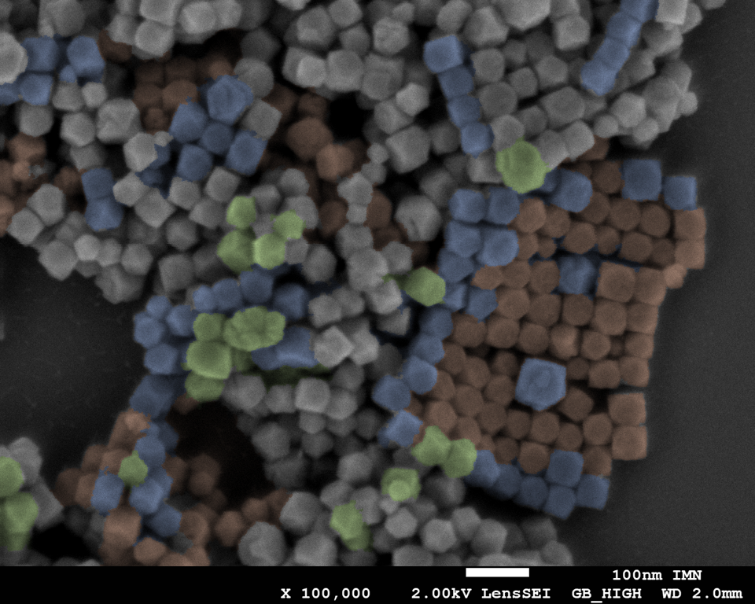
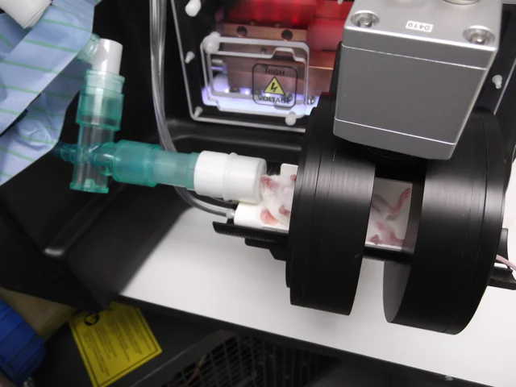

NanoBioMat / Recherche
Recherche
L’équipe NanoBioMat étudie les nanoparticules d’oxyde de fer et leurs assemblages.
Nos recherches portent sur le nanomagnétisme et les applications biomédicales. Nous relions la synthèse, la structure et les propriétés des nanoparticules. Nous étudions aussi leurs interactions avec le vivant.
01
Particules

Taille, forme et anisotropie
La taille, la forme et la structure influencent la réponse magnétique des nanoparticules.
Nous synthétisons des nanoparticules de tailles et de formes contrôlées. Nous cherchons à ajuster leur anisotropie magnétique. Leur énergie magnétique dépend de l’orientation de leur aimantation.
Nous étudions les liens entre synthèse, structure et dynamique de l’aimantation. Nous modifions la surface pour contrôler la dispersion et préparer les assemblages.
Nos synthèses par décomposition thermique s’appuient sur Sun & Zeng, 2002 (nouvel onglet) et Hou et al., 2007 (nouvel onglet).
02
Assemblages

Organisation et interactions magnétiques
Les nanoparticules interagissent au sein des assemblages. Leur réponse collective peut différer de celle des particules dispersées.
Nous assemblons des nanoparticules et des molécules organiques. Nous faisons varier leur composition et leurs conditions de formation. Nous caractérisons leur organisation interne.
Nous étudions les effets de la distance, de l’orientation et de la compacité. Nous mesurons la réponse magnétique et la dissipation d’énergie sous champ alternatif. Nous explorons leurs applications en imagerie et en activation magnétique.
Nous utilisons la nanoprécipitation flash (Johnson & Prud’homme, 2003 (nouvel onglet)). Notre mélangeur à jets impactants (CIJ) est adapté de Han et al., 2012 (nouvel onglet).
03
Interfaces biologiques


Interactions et devenir biologique
Les protéines et les cellules interagissent avec les nanoassemblages. Ces interactions peuvent modifier leur surface, leur organisation et leurs propriétés.
Nous étudions l’entrée des nanoassemblages dans les cellules avec nos partenaires. Nous suivons leurs transformations et leur dégradation. Nous examinons les effets de leur composition et de leur revêtement.
Nous explorons leurs fonctions en imagerie et en délivrance de molécules actives. Nous étudions leur activation par champ magnétique ou par lumière. Nos projets concernent le cancer et les réponses immunitaires dans les maladies du foie. Nous utilisons des modèles cellulaires et précliniques.
Pour comprendre les bases
Nos ressources d’enseignement et de médiation expliquent les notions utilisées dans nos recherches.